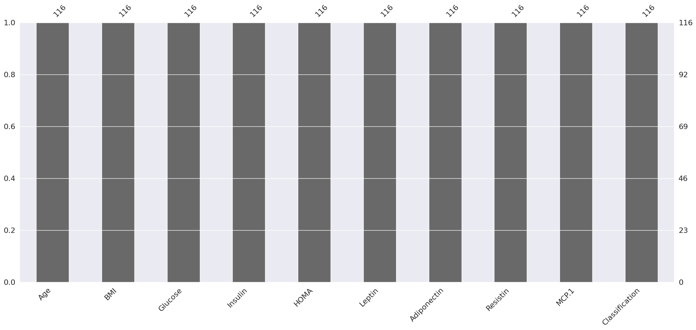
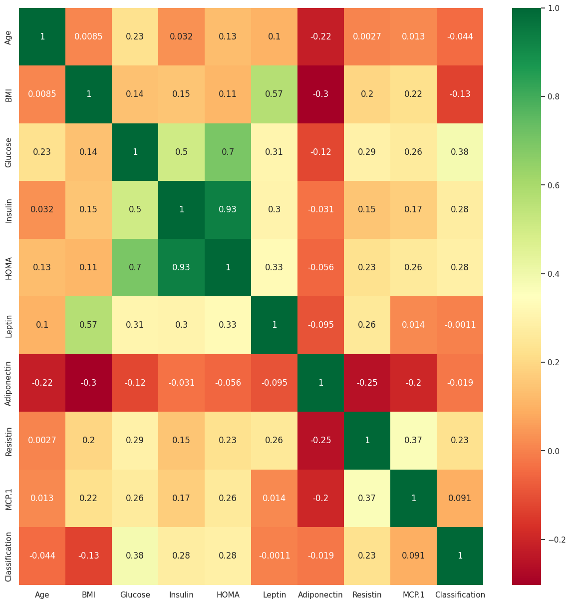

import numpy as np # linear algebra
import pandas as pd # data processing, CSV file I/O (e.g. pd.read_csv)
from sklearn import datasets
from sklearn.model_selection import train_test_split
from sklearn.neighbors import KNeighborsClassifier
import seaborn as sns
sns.set()
import matplotlib.pyplot as plt
import os
dataset = pd.read_csv("https://raw.githubusercontent.com/Rifqi-05/pendata/main/dataR2.csv")
dataset.info()
<class 'pandas.core.frame.DataFrame'>
RangeIndex: 116 entries, 0 to 115
Data columns (total 10 columns):
# Column Non-Null Count Dtype
--- ------ -------------- -----
0 Age 116 non-null int64
1 BMI 116 non-null float64
2 Glucose 116 non-null int64
3 Insulin 116 non-null float64
4 HOMA 116 non-null float64
5 Leptin 116 non-null float64
6 Adiponectin 116 non-null float64
7 Resistin 116 non-null float64
8 MCP.1 116 non-null float64
9 Classification 116 non-null int64
dtypes: float64(7), int64(3)
memory usage: 9.2 KB
dataset.describe()
| Age | BMI | Glucose | Insulin | HOMA | Leptin | Adiponectin | Resistin | MCP.1 | Classification | |
|---|---|---|---|---|---|---|---|---|---|---|
| count | 116.000000 | 116.000000 | 116.000000 | 116.000000 | 116.000000 | 116.000000 | 116.000000 | 116.000000 | 116.000000 | 116.000000 |
| mean | 57.301724 | 27.582111 | 97.793103 | 10.012086 | 2.694988 | 26.615080 | 10.180874 | 14.725966 | 534.647000 | 1.551724 |
| std | 16.112766 | 5.020136 | 22.525162 | 10.067768 | 3.642043 | 19.183294 | 6.843341 | 12.390646 | 345.912663 | 0.499475 |
| min | 24.000000 | 18.370000 | 60.000000 | 2.432000 | 0.467409 | 4.311000 | 1.656020 | 3.210000 | 45.843000 | 1.000000 |
| 25% | 45.000000 | 22.973205 | 85.750000 | 4.359250 | 0.917966 | 12.313675 | 5.474283 | 6.881763 | 269.978250 | 1.000000 |
| 50% | 56.000000 | 27.662416 | 92.000000 | 5.924500 | 1.380939 | 20.271000 | 8.352692 | 10.827740 | 471.322500 | 2.000000 |
| 75% | 71.000000 | 31.241442 | 102.000000 | 11.189250 | 2.857787 | 37.378300 | 11.815970 | 17.755207 | 700.085000 | 2.000000 |
| max | 89.000000 | 38.578759 | 201.000000 | 58.460000 | 25.050342 | 90.280000 | 38.040000 | 82.100000 | 1698.440000 | 2.000000 |
dataset.head()
| Age | BMI | Glucose | Insulin | HOMA | Leptin | Adiponectin | Resistin | MCP.1 | Classification | |
|---|---|---|---|---|---|---|---|---|---|---|
| 0 | 48 | 23.500000 | 70 | 2.707 | 0.467409 | 8.8071 | 9.702400 | 7.99585 | 417.114 | 1 |
| 1 | 83 | 20.690495 | 92 | 3.115 | 0.706897 | 8.8438 | 5.429285 | 4.06405 | 468.786 | 1 |
| 2 | 82 | 23.124670 | 91 | 4.498 | 1.009651 | 17.9393 | 22.432040 | 9.27715 | 554.697 | 1 |
| 3 | 68 | 21.367521 | 77 | 3.226 | 0.612725 | 9.8827 | 7.169560 | 12.76600 | 928.220 | 1 |
| 4 | 86 | 21.111111 | 92 | 3.549 | 0.805386 | 6.6994 | 4.819240 | 10.57635 | 773.920 | 1 |
## null count analysis before modelling to keep check
import missingno as msno
p=msno.bar(dataset)

sns.countplot(y=dataset.Classification ,data=dataset)
plt.xlabel("Count of each Target class")
plt.ylabel("Target classes")
plt.show()

# memvisualisasikan distribusi data pada setiap fitur dalam dataset Iris, dengan membaginya berdasarkan spesiesnya.
fig,ax = plt.subplots(nrows = 2, ncols=2, figsize=(16,10))
row = 0
col = 0
for i in range(len(dataset.columns) -1):
if col > 1:
row += 1
col = 0
axes = ax[row,col]
sns.boxplot(x = dataset['Classification'], y = dataset[dataset.columns[i]],ax = axes)
col += 1
plt.tight_layout()
# plt.title("Individual Features by Class")
plt.show()
IndexErrorTraceback (most recent call last)
<ipython-input-7-a4d61978619b> in <cell line: 5>()
7 row += 1
8 col = 0
----> 9 axes = ax[row,col]
10 sns.boxplot(x = dataset['Classification'], y = dataset[dataset.columns[i]],ax = axes)
11 col += 1
IndexError: index 2 is out of bounds for axis 0 with size 2
p=sns.pairplot(dataset, hue = 'Classification')
plt.figure(figsize=(15,15))
p=sns.heatmap(dataset.corr(), annot=True,cmap='RdYlGn')

dataset.hist(figsize=(15,12),bins = 15)
plt.title("Features Distribution")
plt.show()
1. Without PCA
X = dataset.drop(['Classification'],axis=1)
y = dataset.Classification
from sklearn.preprocessing import MinMaxScaler
scaler = MinMaxScaler()
X=scaler.fit_transform(X)
X_train, X_test, y_train, y_test = train_test_split(X, y, test_size = 0.3, random_state=20, stratify=y)
knn = KNeighborsClassifier(7)
knn.fit(X_train,y_train)
print("Train score before PCA",knn.score(X_train,y_train),"%")
print("Test score before PCA",knn.score(X_test,y_test),"%")
Train score before PCA 0.7901234567901234 %
Test score before PCA 0.7428571428571429 %
2. With PCA
from sklearn.decomposition import PCA
pca = PCA()
X_new = pca.fit_transform(X)
pca.get_covariance()
array([[ 0.06144881, 0.00052526, 0.0091124 , 0.00144746, 0.00466534,
0.0056767 , -0.01024868, 0.00010675, 0.00069848],
[ 0.00052526, 0.06170945, 0.00551005, 0.00648568, 0.00421325,
0.03157341, -0.01414478, 0.00762187, 0.01164924],
[ 0.0091124 , 0.00551005, 0.025521 , 0.01448671, 0.01647789,
0.01087536, -0.00366943, 0.00730974, 0.0088572 ],
[ 0.00144746, 0.00648568, 0.01448671, 0.03228911, 0.0248169 ,
0.01208764, -0.00105773, 0.00414116, 0.00655789],
[ 0.00466534, 0.00421325, 0.01647789, 0.0248169 , 0.02194941,
0.01081731, -0.00156987, 0.00537756, 0.00804817],
[ 0.0056767 , 0.03157341, 0.01087536, 0.01208764, 0.01081731,
0.04979235, -0.00400347, 0.00898027, 0.0006543 ],
[-0.01024868, -0.01414478, -0.00366943, -0.00105773, -0.00156987,
-0.00400347, 0.03537659, -0.00745515, -0.0079012 ],
[ 0.00010675, 0.00762187, 0.00730974, 0.00414116, 0.00537756,
0.00898027, -0.00745515, 0.02466857, 0.012048 ],
[ 0.00069848, 0.01164924, 0.0088572 , 0.00655789, 0.00804817,
0.0006543 , -0.0079012 , 0.012048 , 0.0438126 ]])
explained_variance=pca.explained_variance_ratio_
explained_variance
array([0.31421633, 0.18103488, 0.15761684, 0.13537259, 0.07412668,
0.06414567, 0.03716828, 0.03405289, 0.00226583])
pca=PCA(n_components=4)
X_new=pca.fit_transform(X)
X_train_new, X_test_new, y_train, y_test = train_test_split(X_new, y, test_size = 0.3, random_state=20, stratify=y)
knn_pca = KNeighborsClassifier(7)
knn_pca.fit(X_train_new,y_train)
print("Train score after PCA",knn_pca.score(X_train_new,y_train),"%")
print("Test score after PCA",knn_pca.score(X_test_new,y_test),"%")
Train score after PCA 0.7407407407407407 %
Test score after PCA 0.7428571428571429 %